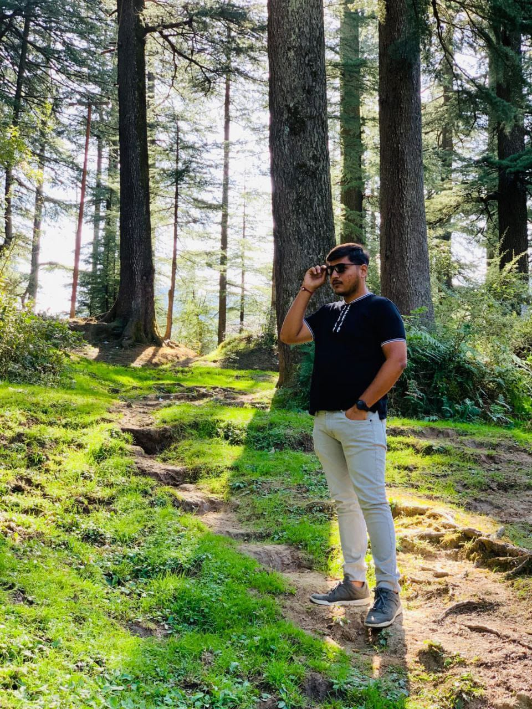

I have completed my bachelor’s in Computer Application from MIT WORLD PEACE UNIVERSITY.
It was a 3 years course from which I have learned various Languages such as C, C++, C#, Java, Python, PHP and Database like MySql and Oracle.
After that, I worked as a Juinor Developer for 1 year of time period and Also Handled my Fathers business while Doing so.
Right now, I am pursuing my post graduation in Lambton College, Toronto course named Full Stack Software Development.
My Future goal is to be an Entrepreneur and start my own IT company but before that I want to gain experience by becoming a front end developer